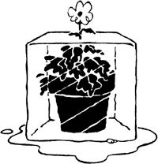

[2] With the help of friends, we built our solar addition in a matter of weeks. [3] A rock ""carpet""serves as a solar collector. [4] Ornamentals and . . . [5] green peppers are two of the plants and vegetables we now grow year round!